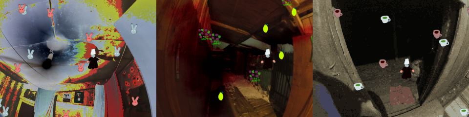

Welcome, digital traveller!
Here you will find a few works of mine - games, screensavers... and possibly more!
All of these are free for you to enjoy, and I do hope that my art will give you a unique experience...
This is one-man organisation (I am also known on the Net as Macabre), though I may participate in collaborations with other artistic people.
Let us uncover the mysteries of the hidden, elusive world! If you want to contact me, write to savagegenius333 @ yahoo . com.
You can also visit my page at Glorious Trainwrecks - https://www.glorioustrainwrecks.com/user/24697.
***
GAMES
My Head Hurts Like a Bitch
General Game
Information: It is also known as "The Sauna Game".
This is the first game I worked on, though it was completed and released after Peyote Runner. It is also the only game I've made using OHRRPGCE (for now). It may be slightly unstable and "crash on you", but this shouldn't be a bother, since it's rather short and possible to complete without any problems.
Synopsis: You are Sauna Boy. In this strong-languaged world of pain you seek the truth. Why does your head hurt so much? Is it because of these saunas? Are they your inescapable destiny, your doom? Or a blessing in disguise? You must find the answer on your own...
Type: Exploration/Narrative
This is the first game I worked on, though it was completed and released after Peyote Runner. It is also the only game I've made using OHRRPGCE (for now). It may be slightly unstable and "crash on you", but this shouldn't be a bother, since it's rather short and possible to complete without any problems.
Synopsis: You are Sauna Boy. In this strong-languaged world of pain you seek the truth. Why does your head hurt so much? Is it because of these saunas? Are they your inescapable destiny, your doom? Or a blessing in disguise? You must find the answer on your own...
Type: Exploration/Narrative
Peyote Runner
General
Game Information:
This game was originally made for an event on Glorious Trainwrecks.
It's my first TGF project! I've met several technical difficulties, but
with encouragement and help from C3K Software and Sergio Cornaga this
game was born!Synopsis: You are Weird Monster, who is sort of stuck in the desert searching for Magic Cacti. Your task is simple - gather the plants, and gain some wisdom in the process!
Type: A little adventure.

General Game
Information:
This is a favourite game of mine! I hope you will like it too! I
received a good deal of inspiration from the nettle plants in our
cherry orchad...
Synopsis: Deep into the nettle grove you go. What will you find? What will you lose? You need to establish a soul dialogue with the local plants, and resolve a very serious matter. And all of this will lead you to... well, you'll see.
Type: Perplexing adventure/Unexpected shooter/Dancing
Synopsis: Deep into the nettle grove you go. What will you find? What will you lose? You need to establish a soul dialogue with the local plants, and resolve a very serious matter. And all of this will lead you to... well, you'll see.
Type: Perplexing adventure/Unexpected shooter/Dancing
Aonuma Chiasa's Photobook Hunt
General Game
Information: This is a game with a historical and cultural
context. Devoted to beautiful Japanese ladies...
Synopsis: You are Aonuma Chiasa, a famous Japanese model of the sunny 90s that are so far away now... Armed with your passion alone, you have to battle strange creatures and collect various photobooks. The gameplaay may seem to be rather complicated, so please take a look at the readme!
Type: Collecting/Action
Synopsis: You are Aonuma Chiasa, a famous Japanese model of the sunny 90s that are so far away now... Armed with your passion alone, you have to battle strange creatures and collect various photobooks. The gameplaay may seem to be rather complicated, so please take a look at the readme!
Type: Collecting/Action
Lamp Eating Simulator 2017
General Game
Information:
Here we go with a game based on one of my worst nightmares! It is
pretty disturbing - to me, at least - but you may find it even funny!
Three levels, menu-based structure. Also my first game with a logo!
Synopsis: Welcome to the world of personal horror. The only way to know the monstrous nature of our mind is to become a monster... Your prey is rather unusual, but again, everything can happen in the land of dreams...
Type: action/personal horror
Synopsis: Welcome to the world of personal horror. The only way to know the monstrous nature of our mind is to become a monster... Your prey is rather unusual, but again, everything can happen in the land of dreams...
Type: action/personal horror
Winter Collecting Game

General Game
Information:
Created from a sudden spark of inspiration, Winter Collecting Game will
hopefully help you feel a little better on cold winter nights!
Synopsis: It is a cold, dark winter night. The Man With A Pale Face In A Big Dark Coat With A White Hat is stuck in the world of horrible rooms with bad ceilings and creepy barns. You decided to help him regain his hope by collecting all the nice things that were lost and forgotten in these places...
Type: Collecting/New Year Gift
[Download]Synopsis: It is a cold, dark winter night. The Man With A Pale Face In A Big Dark Coat With A White Hat is stuck in the world of horrible rooms with bad ceilings and creepy barns. You decided to help him regain his hope by collecting all the nice things that were lost and forgotten in these places...
Type: Collecting/New Year Gift
SCREENSAVERS
Smilie Screensaver
Information:
Making screensavers in TGF is extremely fun! This one was inspired by
the infamous unholy smilies of Mr. K!
Read the text file for further instructions, and let these strange visages roam across your monitor!
Read the text file for further instructions, and let these strange visages roam across your monitor!
[Download]
MOVIES
Tales of Syrok: Skeletons in the Barn
PILES OF DIRT: Life on the Floor
***
Hosted by Galaxa Entertainment
MOVIES
Tales of Syrok: Skeletons in the Barn
Information: A vicious artifact of
modern humanity, the almighty Syrok will tell you a short, but scary
story about ancestral creatures lurking the shadows...
They're closer than you think!
They're closer than you think!
PILES OF DIRT: Life on the Floor
Information: A piece of truth about
what lies beneath our feet. A whole world gone unnoticed, darkened and
frozen to the core. Is there nothing to find there? This movie reaches
to the very elements of our absurd existence to provide the much needed
answer.
***
Hosted by Galaxa Entertainment